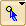

Cartographer has a number of tools that are present in the taxon or tree window:
Tool |
Name | Description |
| Latitude-Longitude Tool | Shows the latitude and longitude of the tool's location. | |
 |
Search Web Tool | Opens a web browser and shows a closeup of the location touched in a geographic web site (e.g., TerraServer, Topozone, MapQuest) |
| Add Taxon Tool | Adds a new taxon at the touched location | |
| Move Taxon Tool | Moves the location of a taxon's dot or symbol | |
| Calibration Tool | Adds or removes calibration points |
Latitude-Longitude Tool
When plotting taxa or trees on a map, the Latitude-Longitude Tool () will appear in the tool palette of the window. This tool, when moved over the map, will report in the explanation area at the bottom of the window the latitude and longitude of the cursor.
Search Web Tool
The Search Web Tool (), when touched on the map, will open your browser and show you a close-up of that locality in Google Maps (the default), TerraServer, Topozone, or MapQuest (the choice between these options is available in the popup menu of the tool's button). If you touch on the dot or symbol for a taxon, you will be taken to the exact coordinates of that taxon. Of course, this only works within the territory covered by each of these web sites - the United States of America for TerraServer and Topozone, and many more countries for MapQuest and Google Maps.
Add Taxon Tool
The Add Taxon tool ( )
is available if you are plotting a map in a Taxa Window (but not in a Tree
Window). It allows you to add taxa.
)
is available if you are plotting a map in a Taxa Window (but not in a Tree
Window). It allows you to add taxa.
Move Taxon Tool
The Move Taxon tool ( )
is available if you are plotting a map in a Taxa Window (but not in a Tree
Window). To use it, touch on the taxon to be moved, and drag it to its new
location.
)
is available if you are plotting a map in a Taxa Window (but not in a Tree
Window). To use it, touch on the taxon to be moved, and drag it to its new
location.
Calibration Tool
The Calibration Tool ( )
allows you to add or remove calibration
points.
)
allows you to add or remove calibration
points.